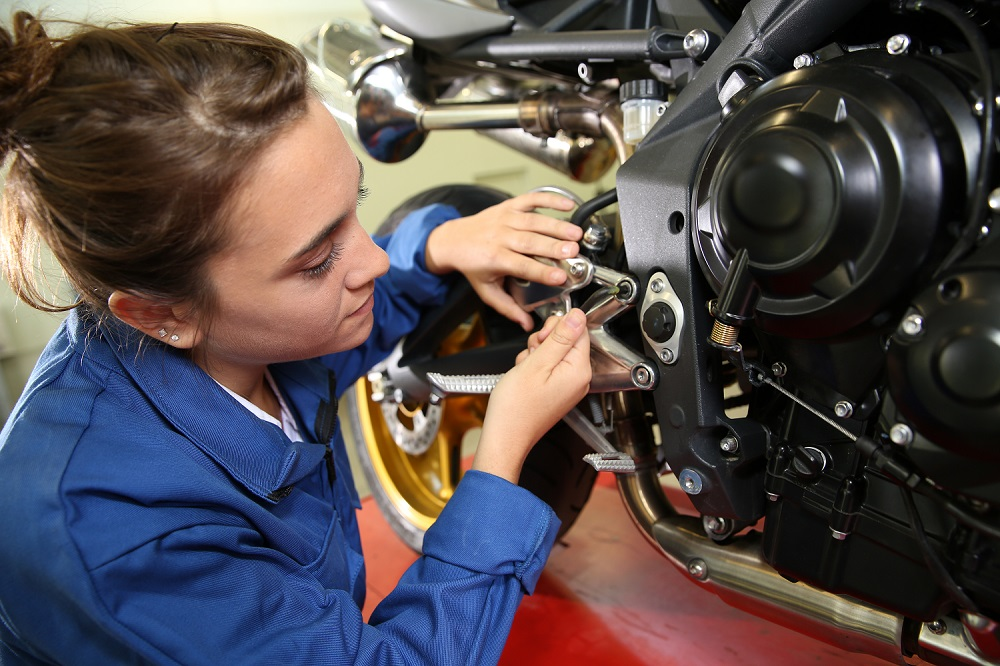
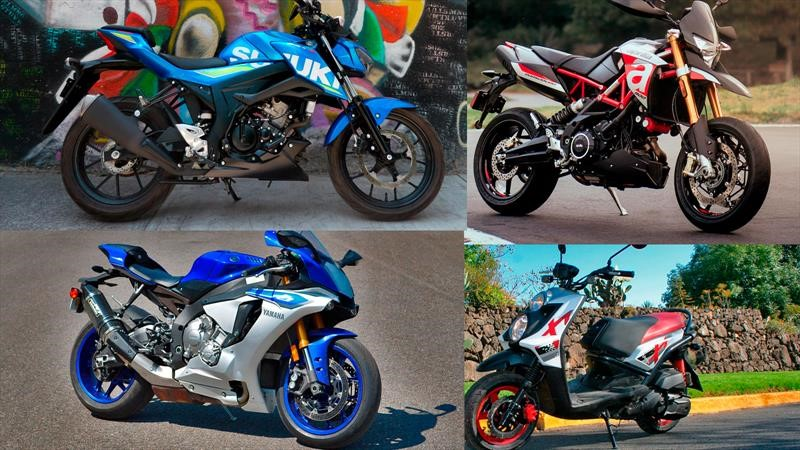
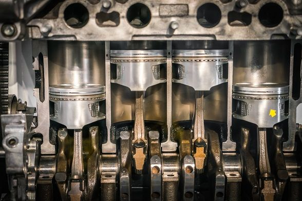

Es el tipo de mantenimiento que se realiza cuando tu moto ya presenta fallas o síntomas. Aquí abordamos cómo identificar y reparar los problemas más comunes en motocicletas de todas las marcas y cilindradas.

Marcas más comunes
Nuestro contenido cubre reparaciones para motocicletas de marcas como Italika, Yamaha, Vento, Honda, Suzuki, KTM y Bajaj, todas muy presentes en el mercado nacional. Cada marca tiene características distintas, pero muchos problemas son similares.

Mantenimiento por cilindrada (cc)
No es lo mismo reparar una moto 125cc que una 400cc. Aquí te explicamos cómo realizar el mantenimiento correctivo en motos de 125cc, 150cc, 200cc, 250cc, 300cc y 400cc, adaptado a sus necesidades específicas.

Consejos generales de reparación
Aprende a identificar ruidos extraños, pérdida de potencia, problemas de arranque y cómo solucionarlos paso a paso. Te damos tips prácticos para que tú mismo puedas reparar o detectar fallas antes de que se vuelvan problemas grandes.